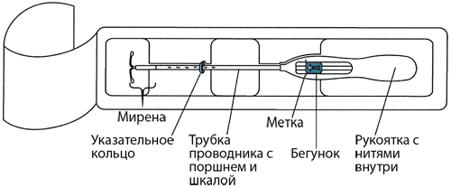
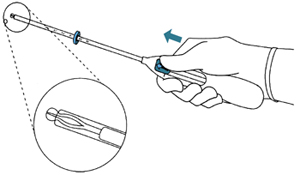
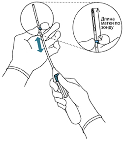
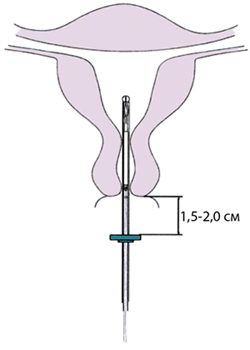
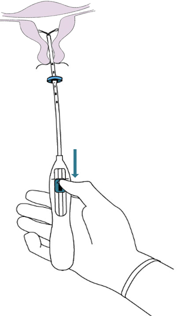
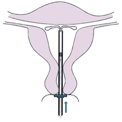
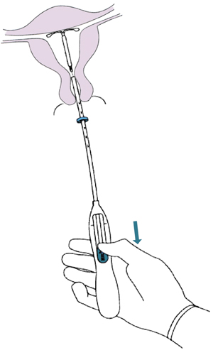
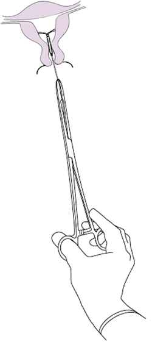

|
 |
| МИРЕНА® (MIRENA®) levonorgestrel ВМС терапевтич. | |||||||||||||||||||||||||||||||||||||||||||||||||||||||||||||||||||||||||||||||||||||||||||||||||||||
|
Клинико-фармакологическая группа: Гестаген Номер и дата регистрации: П N014834/01 от 03.03.09 Код ATX: G02BA03 |
Владелец регистрационного удостоверения: зарегистрировано Представительство: | ||||||||||||||||||||||||||||||||||||||||||||||||||||||||||||||||||||||||||||||||||||||||||||||||||||
Форма выпуска, состав и упаковка Внутриматочная терапевтическая система (ВМС) представляет собой Т-образную левоноргестрел-высвобождающую конструкцию, помещенную в трубку проводника (компоненты проводника: трубка для введения, поршень, указательное кольцо, рукоятка и бегунок). ВМС состоит из белой или почти белой гормонально-эластомерной сердцевины, помещенной на Т-образном корпусе и покрытой непрозрачной мембраной, регулирующей высвобождение левоноргестрела (20 мкг/24 ч). Белый Т-образный корпус снабжен петлей на одном конце и двумя плечами на другом; к петле прикреплены коричневые нити для удаления системы. Т-образная конструкция содержит сульфат бария, что делает ее видимой при рентгеновском обследовании. ВМС свободна от видимых примесей.
Вспомогательные вещества: сердцевина из полидиметилсилоксанового эластомера; мембрана из полидиметилсилоксанового эластомера, содержащая кремния диоксид коллоидный безводный 30-40% масс. Другие компоненты: Т-образный корпус из полиэтилена, содержащий сульфат бария 20-24% масс., тонкая нить из полиэтилена коричневого цвета, окрашенного оксидом железа черным ≤1% масс. ВМС (1) - блистеры стерильные (1) - пачки картонные. | |||||||||||||||||||||||||||||||||||||||||||||||||||||||||||||||||||||||||||||||||||||||||||||||||||||
| |||||||||||||||||||||||||||||||||||||||||||||||||||||||||||||||||||||||||||||||||||||||||||||||||||||
Описание препарата основано на официально утвержденной инструкции по применению и утверждено компанией-производителем для издания 2023 г. | |||||||||||||||||||||||||||||||||||||||||||||||||||||||||||||||||||||||||||||||||||||||||||||||||||||
Фармакологическое действие |
Фармакокинетика |
Показания |
Режим дозирования |
Побочное действие |
Противопоказания |
Беременность и лактация |
Особые указания |
Передозировка |
Лекарственное взаимодействие |
Условия хранения и сроки годности |
Условия реализации
Фармакологическое действие
ВМС Мирена®, высвобождающая левоноргестрел, оказывает главным образом местное гестагенное действие. Гестаген (левоноргестрел) высвобождается непосредственно в полость матки, что позволяет применять его в крайне низкой суточной дозе. Высокие концентрации левоноргестрела в эндометрии способствуют снижению чувствительности его эстрогеновых и прогестероновых рецепторов, делая эндометрий невосприимчивым к эстрадиолу и оказывая сильное антипролиферативное действие. При применении ВМС Мирена® наблюдаются морфологические изменения эндометрия и слабая местная реакция на присутствие в матке инородного тела. Увеличение вязкости секрета шейки матки предупреждает проникновение сперматозоидов в полость матки, вследствие уменьшения подвижности сперматозоидов и изменений в эндометрии снижается вероятность оплодотворения яйцеклетки. У некоторых женщин происходит угнетение овуляции. Предшествующее применение ВМС Мирена® не оказывает влияния на репродуктивную функцию. Приблизительно у 80% женщин, желающих иметь ребенка, беременность наступает в течение 12 месяцев после удаления ВМС. В первые месяцы применения ВМС Мирена®, вследствие процесса угнетения пролиферации эндометрия, может наблюдаться первоначальное усиление "мажущих" кровянистых выделений из влагалища. Вслед за этим выраженное подавление пролиферации эндометрия ведет к уменьшению продолжительности и объема менструальных кровотечений у женщин, применяющих ВМС Мирена®. Скудные кровотечения часто трансформируются в олиго- или аменорею. При этом функция яичников и концентрация эстрадиола в плазме крови остаются нормальными. ВМС Мирена® может применяться для лечения идиопатической меноррагии, т.е. меноррагии при отсутствии гиперпластических процессов в эндометрии (рак эндометрия, метастатические поражения матки, субмукозный или крупный интерстициальный миоматозный узел, приводящий к деформации полости матки, аденомиоз), эндометрита, экстрагенитальных заболеваний и состояний, сопровождающихся выраженной гипокоагуляцией (например, болезнь Виллебранда, тяжелая тромбоцитопения), симптомами которых является меноррагия. Через 3 месяца применения ВМС Мирена® менструальная кровопотеря у женщин с меноррагией снижается на 62-94% и на 71-95% через 6 месяцев применения. При применении ВМС Мирена® в течение 2 лет эффективность применения препарата (снижение менструальной кровопотери) сопоставима с хирургическими методами лечения (аблация или резекция эндометрия). Менее благоприятный ответ на лечение возможен при меноррагиях, обусловленных субмукозной миомой матки. Уменьшение менструальных кровопотерь снижает риск железодефицитной анемии. ВМС Мирена® уменьшает выраженность симптомов дисменореи. Эффективность ВМС Мирена® в предупреждении гиперплазии эндометрия во время постоянной терапии эстрогенами была одинаково высокой как при пероральном, так и при чрескожном применении эстрогена. Фармакокинетика
Действующее вещество ВМС Мирена® - левоноргестрел, высвобождается напрямую в полость матки. Рассчитанная скорость высвобождения in vivo в различные временные точки представлена в таблице 1. Таблица 1. Рассчитанная скорость высвобождения in vivo для ВМС Мирена®
Всасывание После введения ВМС Мирена® левоноргестрел начинает немедленно высвобождаться в полость матки, о чем свидетельствуют данные измерений его концентрации в плазме крови. Системная биодоступность высвобожденного левоноргестрела составляет более 90%. После введения ВМС Мирена® левоноргестрел обнаруживается в плазме крови через 1 ч. Cmax составляет 414 пг/мл и достигается в течение 2 недель после введения. В соответствии со снижающейся скоростью высвобождения медианная концентрация левоноргестрела в плазме крови у женщин репродуктивного возраста с массой тела выше 55 кг уменьшается с 206 пг/мл (25-75-й перцентили: 151 пг/мл-264 пг/мл), определяемых через 6 месяцев, до 194 пг/мл (146 пг/мл-266 пг/мл) через 12 месяцев и до 131 пг/мл (113 пг/мл-161 пг/мл) через 60 месяцев. Медианная концентрация левоноргестрела через 72 месяца (6 лет) составила 113 пг/мл (87.3 пг/мл-155 пг/мл). Высокая местная экспозиция препарата в полости матки, необходимая для местного воздействия ВМС Мирена® на эндометрий, обеспечивает высокий градиент концентрации в направлении от эндометрия к миометрию (концентрация левоноргестрела в эндометрии превышает его концентрацию в миометрии более чем в 100 раз) и низкие концентрации левоноргестрела в плазме крови (концентрация левоноргестрела в эндометрии превышает его концентрацию в плазме крови более чем в 1000 раз). У женщин в постменопаузе, применяющих ВМС Мирена® одновременно с применением эстрогенов, медианная концентрация левоноргестрела в плазме крови уменьшается с 257 пг/мл (25-75-й перцентили: 186 пг/мл-326 пг/мл), определяемых через 12 месяцев, до 149 пг/мл (122 пг/мл-180 пг/мл) через 60 месяцев. При применении ВМС Мирена® одновременно с пероральным приемом эстрогенов концентрация левоноргестрела в плазме крови, определяемая через 12 месяцев, увеличивается примерно до 478 пг/мл (25-75-й процентили: 341 пг/мл-655 пг/мл), что обусловлено индукцией синтеза ГСПГ. Распределение Левоноргестрел неспецифически связывается с альбумином плазмы крови и специфически - с глобулином, связывающим половые гормоны (ГСПГ). Менее 2% циркулирующего левоноргестрела присутствует в виде свободного стероида. Левоноргестрел связывается с ГСПГ с высокой аффинностью. В этой связи изменение концентрации ГСПГ в плазме крови влечет за собой повышение (при более высокой концентрации ГСПГ) или снижение (при более низкой концентрации ГСПГ) общей концентрации левоноргестрела в плазме крови. Концентрация ГСПГ снижается в среднем приблизительно на 20-30% в течение 1 месяца после введения ВМС Мирена®, остается на этом уровне в течение первого года применения и незначительно повышается впоследствии. Концентрация ГСПГ остается стабильной в течение 6 года применения. Средний кажущийся Vd левоноргестрела составляет около 106 л. Было показано, что масса тела и концентрация ГСПГ в плазме крови влияют на системную концентрацию левоноргестрела, т.е. при низкой массе тела и/или высокой концентрации ГСПГ концентрация левоноргестрела выше. У женщин репродуктивного возраста с низкой массой тела (37-55 кг) медианная концентрация левоноргестрела в плазме крови примерно в 1.5 раза выше. Метаболизм Левоноргестрел в значительной степени метаболизируется. Наиболее важными путями метаболизма являются восстановление Δ4-3-оксо-группы и гидроксилирование в позициях 2α, 1β и 16β с последующим конъюгированием. CYP3A4 является основным ферментом, участвующим в окислительном метаболизме левоноргестрела. Доступные данные in vitro позволяют предположить небольшую значимость реакций CYP-опосредованной биотрансформации для левоноргестрела в сравнении с восстановлением и конъюгированием. Выведение Общий клиренс левоноргестрела из плазмы крови составляет примерно 1 мл/мин/кг. В неизмененном виде левоноргестрел выводится лишь в следовых количествах. Метаболиты выводятся через кишечник и почками с коэффициентом экскреции, равным приблизительно 1.77. T1/2 в терминальной фазе, представленной, главным образом, метаболитами, составляет около суток. Линейность/нелинейность Фармакокинетика левоноргестрела зависит от концентрации ГСПГ, на которую, в свою очередь, оказывает влияние концентрация эстрогенов и андрогенов. Снижение концентрации ГСПГ приводит к снижению общей концентрации левоноргестрела в плазме крови, что указывает на нелинейность фармакокинетики левоноргестрела в зависимости от времени. С учетом преимущественно местного действия ВМС Мирена®, влияние изменений системных концентраций левоноргестрела на эффективность ВМС Мирена® маловероятно. Показания
Режим дозирования
ВМС Мирена® вводится в полость матки и сохраняет эффективность в течение 6 лет по показанию контрацепция и в течение 5 лет по показаниям идиопатическая меноррагия, профилактика гиперплазии эндометрия при проведении ЗГТ эстрогенами. Скорость высвобождения левоноргестрела in vivo в начале применения составляет приблизительно 20 мкг/24 часа и снижается приблизительно до 18 мкг/24 часа через 1 год, до 10 мкг/24 часа через 5 лет и до 9 мкг/24 часа через 6 лет. Средняя скорость высвобождения левоноргестрела - приблизительно 15 мкг/24 часа на протяжении до 5 лет и 15 мкг в сутки в течение срока до 6 лет. ВМС Мирена® можно применять у женщин, получающих пероральные или трансдермальные препараты для ЗГТ, содержащие только эстроген. При правильной установке ВМС Мирена®, проведенной в соответствии с инструкцией по медицинскому применению, индекс Перля (показатель, отражающий число беременностей у 100 женщин, применяющих контрацептив в течение 1 года) составляет приблизительно 0.2%. Кумулятивный коэффициент неудач составляет приблизительно 0.7% за 5 лет. При применении ВМС Мирена® более 5 лет коэффициент неудач при контрацепции в течение 6 года составлял 0.29%. Инструкции по применению ВМС Мирена® ВМС Мирена® поставляется в стерильной упаковке, которую вскрывают только непосредственно перед установкой ВМС. Необходимо соблюдать правила асептики при обращении со вскрытой системой. Если стерильность упаковки кажется нарушенной, ВМС следует уничтожить как медицинские отходы. Так же следует обращаться и с удаленной из матки ВМС, поскольку она содержит остатки гормона. Установка, удаление и замена ВМС Рекомендуется, чтобы ВМС Мирена® устанавливал только врач, имеющий опыт работы с данной ВМС или хорошо обученный выполнению этой процедуры. Перед установкой ВМС Мирена® женщину следует проинформировать об эффективности, рисках и нежелательных реакциях применения ВМС. Следует провести общее и гинекологическое обследование, включающее обследование органов малого таза и молочных желез. При необходимости по решению врача следует провести исследование мазка из шейки матки. Следует исключить беременность и заболевания, передаваемые половым путем, а воспалительные заболевания органов малого таза должны быть полностью излечены. Определяют положение матки и размеры ее полости. При необходимости визуализации матки перед введением ВМС Мирена® следует провести УЗИ органов малого таза. После гинекологического исследования во влагалище вводят влагалищное зеркало и обрабатывают шейку матки раствором антисептика. Затем через тонкую гибкую пластиковую трубку в матку вводят ВМС Мирена®. Особенно важно правильное расположение ВМС Мирена® в дне матки, что обеспечивает равномерное воздействие гестагена на эндометрий, предупреждает экспульсию ВМС и создает условия для ее максимальной эффективности. Поэтому следует тщательно выполнять требования инструкции по установке ВМС Мирена®. Поскольку техника установки в матке разных ВМС различна, особое внимание следует обратить на отработку правильной техники установки конкретной системы. Женщина может чувствовать введение системы, но оно не должно вызывать у нее сильной боли. Перед введением, если потребуется, можно применить парацервикальную блокаду и/или анальгетики. В некоторых случаях у пациенток может быть стеноз цервикального канала. Не следует применять избыточное усилие при введении ВМС Мирена® таким пациенткам. Иногда после введения ВМС отмечаются боль, головокружение, потоотделение и бледность кожных покровов. Женщинам рекомендуется отдохнуть в течение некоторого времени после введения ВМС Мирена®. Если после получасового пребывания в спокойном положении эти явления не проходят, возможно, что ВМС неправильно расположена. Должно быть проведено гинекологическое обследование; при необходимости систему удаляют. У некоторых женщин применение ВМС Мирена® вызывает кожные аллергические реакции. Женщину нужно повторно обследовать через 4-12 недель после установки, а затем 1 раз в год или чаще при наличии клинических показаний. У женщин репродуктивного возраста ВМС Мирена® следует устанавливать в полость матки в течение 7 дней от начала менструации. ВМС Мирена® может быть заменена новой ВМС в любой день менструального цикла. ВМС также может быть установлена немедленно после аборта в I триместре беременности при условии отсутствия воспалительных заболеваний половых органов. Применение ВМС рекомендуется для женщин, имеющих в анамнезе хотя бы одни роды. Установку ВМС Мирена® в послеродовом периоде следует проводить только после полной инволюции матки, но не ранее чем через 6 недель после родов. При продолжительной субинволюции матки необходимо исключить послеродовый эндометрит и другие причины значительной задержки инволюции и отложить решение о введении ВМС Мирена® до завершения инволюции матки. Ввиду высокого риска перфорации матки в послеродовом периоде, предпочтительно введение ВМС Мирена® через 12 недель после родов. В случае затруднений при установке ВМС и/или очень сильной боли или кровотечения в течение или после процедуры следует принять во внимание возможность перфорации и принять соответствующие меры, такие как физикальное обследование и УЗИ. Для профилактики гиперплазии эндометрия при проведении ЗГТ препаратами, содержащими только эстроген, у женщин с аменореей ВМС Мирена® может быть установлена в любое время; у женщин с сохраненными менструациями установку производят в последние дни менструального кровотечения или кровотечения "отмены". Удаляют ВМС Мирена® путем осторожного вытягивания за нити, захваченные щипцами. Если нити не видны, а система находится в полости матки, она может быть удалена с помощью тракционного крючка для извлечения ВМС. При этом может потребоваться расширение канала шейки матки. Систему, применяемую по показанию контрацепция, следует удалить через 6 лет после установки или через 5 лет после установки, если система применяется по показаниям идиопатическая меноррагия, профилактика гиперплазии эндометрия при проведении ЗГТ эстрогенами. Если женщина хочет продолжать применение того же метода, новая система может быть установлена сразу после удаления предыдущей. В случае необходимости дальнейшей контрацепции у женщин репродуктивного возраста удаление ВМС следует выполнить в течение 7 дней после начала менструации при условии, что у женщины регулярные менструации. Если система удаляется в другое время цикла, или у женщины нерегулярные менструации, и в течение предшествующей недели был половой контакт, женщина подвергается риску забеременеть. Для обеспечения непрерывной контрацепции новая ВМС должна быть введена незамедлительно после удаления предыдущей ВМС, или должен быть инициирован альтернативный метод контрацепции. Установка и удаление ВМС могут сопровождаться определенными болевыми ощущениями и кровотечением. Процедура может вызвать обморок вследствие вазовагальной реакции, брадикардию или судорожный приступ у пациенток с эпилепсией, особенно при наличии предрасположенности к данным состояниям или в случае стеноза цервикального канала. После удаления ВМС Мирена® следует проверить систему на предмет целостности. При трудностях с удалением ВМС отмечались единичные случаи соскальзывания гормонально-эластомерной сердцевины на горизонтальные плечи Т-образного корпуса, в результате чего они скрывались внутри сердцевины. Как только целостность ВМС подтверждена, дополнительного вмешательства данная ситуация не требует. Ограничители на горизонтальных плечах обычно предупреждают полное отделение сердцевины от Т-образного корпуса. Дополнительная информация для некоторых групп пациенток Дети и подростки до 18 лет Безопасность и эффективность применения ВМС Мирена® у девочек-подростков до 18 лет пока не установлены. Нет показаний для применения ВМС Мирена® до менархе (установления менструального цикла). Пациентки пожилого возраста ВМС Мирена® не изучалась у женщин в возрасте старше 65 лет, поэтому применение ВМС Мирена® не рекомендуется для данной группы пациенток. ВМС Мирена® не относится к препаратам первого выбора для женщин в постменопаузном периоде до 65 лет с выраженной атрофией матки. Пациентки с нарушениями функции печени ВМС Мирена® противопоказана женщинам с острыми заболеваниями или опухолями печени (см. раздел "Противопоказания"). Пациентки с нарушениями функции почек ВМС Мирена® не изучалась у пациенток с нарушениями функции почек. Инструкция по введению Устанавливается только врачом с использованием стерильных инструментов. ВМС Мирена® поставляется вместе с проводником в стерильной упаковке, которую нельзя вскрывать до установки. Не подвергать повторной стерилизации. Только для однократного применения. Не использовать ВМС Мирена®, если внутренняя упаковка повреждена или открыта. Не устанавливать ВМС Мирена® по истечении срока годности, указанного на упаковке. Перед установкой следует ознакомиться с информацией по применению ВМС Мирена®. Подготовка к введению
Введение 1. Вскрыть стерильную упаковку (рисунок 1). После этого все манипуляции следует проводить с использованием стерильных инструментов и в стерильных перчатках.  Рис. 1 2. Отодвинуть бегунок вперед по направлению стрелки в самое дальнее положение для того, чтобы втянуть ВМС внутрь трубки-проводника (рисунок 2).  Рис. 2 Важная информация. Не следует перемещать бегунок по направлению вниз, т.к. это может привести к преждевременному высвобождению ВМС Мирена®. Если это произойдет, систему будет невозможно вновь поместить внутрь проводника. 3. Удерживая бегунок в самом дальнем положении, установить верхний край указательного кольца в соответствии с измеренным зондом расстоянием от наружного зева до дна матки (рисунок 3).  Рис. 3 4. Продолжая удерживать бегунок в самом дальнем положении, следует продвигать проводник осторожно через цервикальный канал в матку до тех пор, пока указательное кольцо не окажется на расстоянии около 1.5-2 см от шейки матки (рисунок 4).  Рис. 4 Важная информация. Не следует продвигать проводник с усилием. При необходимости следует расширить цервикальный канал. 5. Держа проводник неподвижно, отодвинуть бегунок до метки для раскрытия горизонтальных плеч ВМС Мирена® (рисунок 5). Следует подождать 5-10 сек, пока горизонтальные плечи полностью не раскроются.  Рис. 5 6. Осторожно продвигать проводник внутрь до тех пор, пока указательное кольцо не соприкоснется с шейкой матки. ВМС Мирена® должна находиться в дне матки (рисунок 6).  Рис. 6 7. Удерживая проводник в том же положении, высвободить ВМС Мирена®, передвинув бегунок максимально вниз (рисунок 7). Удерживая бегунок в том же положении, осторожно удалить проводник, потянув за него. Отрезать нити таким образом, чтобы их длина составляла 2-3 см от наружного зева матки.  Рис. 7 Важная информация. Если у врача есть сомнения, что система установлена правильно, следует проверить положение ВМС Мирена®, например, с помощью УЗИ или, если необходимо, удалить систему и ввести новую, стерильную систему. Следует удалить систему, если она не полностью находится в полости матки. Удаленная система не должна повторно использоваться. Удаление/замена ВМС Мирена® Перед удалением/заменой ВМС Мирена® следует ознакомиться с инструкцией по применению ВМС Мирена®. ВМС Мирена® удаляют путем осторожного вытягивания за нити, захваченные щипцами (рисунок 8).  Рис. 8 Новая ВМС Мирена® может быть установлена сразу же после удаления предыдущей. Побочное действие
У большинства женщин после установки ВМС Мирена® происходит изменение характера циклических кровотечений. В течение первых 90 дней применения ВМС Мирена® увеличение продолжительности кровотечений отмечают 22% женщин, а нерегулярные кровотечения отмечаются у 67% женщин, частота этих явлений снижается соответственно до 3% и 19% к концу первого года ее применения. Одновременно аменорея развивается у 0%, а редкие кровотечения - у 11% пациенток в течение первых 90 дней применения. К концу первого года применения частота этих явлений увеличивается до 16% и 57% соответственно. К концу 6 года применения ВМС Мирена® увеличение продолжительности кровотечений и нерегулярные кровотечения отмечаются у 2% и 15% женщин соответственно, аменорея встречается у 24%, а редкие кровотечения - у 31% пациенток. При применении ВМС Мирена® в комбинации с продолжительной ЗГТ эстрогенами у большинства женщин в течение первого года применения циклические кровотечения постепенно прекращаются. В таблице 2 приведены данные по частоте возникновения нежелательных реакций (НР), о которых сообщалось при применении ВМС Мирена®. По частоте возникновения НР делятся на очень частые (≥1/10), частые (от ≥1/100 до <1/10), нечастые (от ≥1/1000 до <1/100), редкие (от ≥1/10000 до <1/1000) и с неизвестной частотой. В таблице НР распределены по системно-органным классам согласно MedDRA. Данные по частоте отражают приблизительную частоту возникновения НР, зарегистрированных в ходе клинических исследований ВМС Мирена® по показаниям "контрацепция" и "идиопатическая меноррагия" с участием 5091 женщин. НР, о которых сообщалось в ходе клинических исследований ВМС Мирена® по показанию "профилактика гиперплазии эндометрия при проведении ЗГТ эстрогенами" (с участием 514 женщин), наблюдались с той же частотой, за исключением случаев, обозначенных сносками (*, **). Таблица 2. Нежелательные реакции
* "Часто" по показанию "профилактика гиперплазии эндометрия при проведении ЗГТ эстрогенами". ** "Очень часто" по показанию "профилактика гиперплазии эндометрия при проведении ЗГТ эстрогенами". *** Эта частота основана на результатах крупного проспективного сравнительного неинтервенционного когортного исследования с участием женщин, применяющих ВМС, которое продемонстрировало, что грудное вскармливание во время введения и введения до 36 недель после родов являются независимыми факторами риска перфорации (см. раздел "Особые указания"). В клинических исследованиях с ВМС Мирена®, в которые не были включены женщины в период грудного вскармливания, случаи перфорации отмечались с частотой "редко" . Для описания определенных реакций, их синонимов, и связанных с ними состояний в большинстве случаев использована терминология, соответствующая MedDRA. В отдельном исследовании с участием 362 женщин, применявших ВМС Мирена® в течение более 5 лет, был продемонстрирован сопоставимый профиль побочных реакций в течение 6 года применения. Дополнительная информация Если у женщины с установленной ВМС Мирена® наступает беременность, относительный риск эктопической беременности повышается. Партнер может ощущать нити во время полового акта. Риск возникновения рака молочной железы при применении ВМС Мирена® по показанию "профилактика гиперплазии эндометрия при проведении ЗГТ эстрогенами" неизвестен. Сообщалось о случаях рака молочной железы (частота неизвестна, см. разделы "С осторожностью" и "Особые указания"). Сообщалось о следующих НР в связи с процедурой установки или удаления ВМС Мирена®: боль во время процедуры, кровотечение во время процедуры, вазовагальная реакция, связанная с установкой, сопровождающаяся головокружением или обмороком. Процедура может спровоцировать судорожный приступ у пациенток с эпилепсией. Инфицирование После установки ВМС сообщалось о случаях сепсиса (включая стрептококковый сепсис группы А) (см. раздел "Особые указания"). Противопоказания
С осторожностью При перечисленных ниже заболеваниях/состояниях/факторах риска ВМС Мирена® следует применять с осторожностью после консультации со специалистом:
Следует обсудить целесообразность удаления системы при наличии или первом возникновении любого из перечисленных ниже заболеваний/состояний/факторов риска:
Применение при беременности и кормлении грудью
Беременность Применение ВМС Мирена® противопоказано при беременности или подозрении на нее. Беременность у женщин, у которых установлена ВМС Мирена®, явление крайне редкое. Но если произошло выпадение ВМС из полости матки, женщина больше не защищена от беременности и должна использовать другие методы контрацепции до консультации с врачом. Во время применения ВМС Мирена® у некоторых женщин отсутствуют менструальные кровотечения. Отсутствие менструаций не обязательно служит признаком беременности. Если у женщины нет менструаций и одновременно имеются другие признаки беременности (тошнота, утомляемость, болезненность молочных желез), то необходимо обратиться к врачу для обследования и проведения теста на беременность. Если беременность возникает у женщины во время применения ВМС Мирена®, рекомендуется удалить ВМС, т.к. любой внутриматочный контрацептив, оставленный in situ, повышает риск самопроизвольного аборта, инфекции или преждевременных родов. Удаление ВМС Мирена® или зондирование полости матки могут привести к самопроизвольному аборту. Внематочная беременность должна быть исключена. Если осторожно удалить внутриматочный контрацептив невозможно, следует обсудить целесообразность медицинского аборта. Если женщина хочет сохранить беременность и ВМС удалить невозможно, следует проинформировать пациентку о рисках, в частности, о возможном риске септического аборта во II триместре беременности, послеродовых гнойно-септических заболеваниях, которые могут осложниться сепсисом, септическим шоком и летальным исходом, а также возможных последствиях преждевременных родов для ребенка. В подобных случаях за течением беременности следует тщательно наблюдать. Женщине следует объяснить, что она должна сообщать врачу обо всех симптомах, позволяющих предположить осложнения беременности, в частности о появлении боли спастического характера внизу живота, сопровождающейся повышением температуры тела. Были единичные случаи маскулинизации наружных половых органов плода женского пола после локального воздействия левоноргестрела во время беременности с применением левоноргестрелсодержащих ВМС. Период грудного вскармливания Грудное вскармливание ребенка при применении ВМС Мирена® не противопоказано. Около 0.1% дозы левоноргестрела может поступить в организм ребенка в процессе грудного вскармливания. Тем не менее, маловероятно, чтобы он представлял риск для ребенка при дозах, высвобождающихся в полость матки после установки ВМС Мирена®. Считается, что применение ВМС Мирена® через 6 недель после родов не оказывает вредного влияния на рост и развитие ребенка. Монотерапия гестагенами не оказывает влияния на количество и качество грудного молока. Фертильность После удаления ВМС Мирена® у женщин происходит восстановление фертильности. Особые указания
До установки ВМС Мирена® следует исключить патологические процессы в эндометрии, поскольку в первые месяцы ее применения часто отмечаются нерегулярные кровотечения/"мажущие" кровянистые выделения. Также следует исключить патологические процессы в эндометрии при возникновении кровотечений после начала ЗГТ эстрогенами у женщины, которая продолжает применять ВМС Мирена®, ранее установленную для контрацепции. Соответствующие диагностические меры необходимо принять также, когда нерегулярные кровотечения развиваются во время длительного лечения. ВМС Мирена® не применяется для посткоитальной контрацепции. Ввиду риска развития бактериального эндокардита, ВМС Мирена® следует применять только по строгим показаниям при наличии в настоящее время врожденных или приобретенных пороков сердца или пороков клапанов. Левоноргестрел в низких дозах может влиять на толерантность к глюкозе, в связи с чем ее концентрацию в плазме крови следует регулярно контролировать у женщин с сахарным диабетом, применяющих ВМС Мирена®. Как правило, коррекции дозы гипогликемических препаратов не требуется. Некоторые проявления полипоза или рака эндометрия могут маскироваться нерегулярными кровотечениями. В таких случаях необходимо дополнительное обследование для уточнения диагноза. ВМС Мирена® не следует рассматривать как метод первого выбора в постменопаузном периоде у женщин с выраженной атрофией матки. Имеющиеся данные свидетельствуют о том, что применение ВМС Мирена® не увеличивает риск развития рака молочной железы у женщин в постменопаузальном периоде в возрасте до 50 лет. В связи с ограниченными данными, полученными в ходе исследования ВМС Мирена® по показанию "профилактика гиперплазии эндометрия при проведении ЗГТ эстрогенами", риск возникновения рака молочной железы при применении ВМС Мирена® по данному показанию не может быть подтвержден или опровергнут. Олиго- и аменорея Олиго- и аменорея у женщин фертильного возраста развивается постепенно, примерно в 57% и 16% случаев в течение первого года применения ВМС Мирена® соответственно. К концу 6 года применения ВМС Мирена® олиго- и аменорея наблюдались у 31% и 24% пациенток соответственно. Если менструации отсутствуют в течение 6 недель после начала последней менструации, следует исключить беременность. Повторные тесты на беременность при аменорее не обязательны, если отсутствуют другие признаки беременности. Когда ВМС Мирена® применяют в комбинации с ЗГТ эстрогенами в непрерывном режиме, у большинства женщин постепенно развивается аменорея в течение первого года. Воспалительные заболевания органов малого таза (ВЗОМТ) Трубка-проводник помогает защитить ВМС Мирена® от инфицирования во время установки, а устройство для введения ВМС Мирена® специально сконструировано так, чтобы свести к минимуму риск инфекции. ВЗОМТ у женщин, применяющих внутриматочную контрацепцию, часто обусловлены инфекциями, передающимися половым путем. Установлено, что наличие нескольких половых партнеров у женщины или нескольких половых партнеров у партнера женщины является фактором риска ВЗОМТ. ВЗОМТ могут иметь серьезные последствия: они способны нарушать репродуктивную функцию и повышать риск эктопической беременности. Как и при других гинекологических или хирургических процедурах, тяжелая инфекция или сепсис (включая стрептококковый сепсис группы А) может развиваться после установки ВМС, хотя это случается крайне редко. При рецидивирующем эндометрите или ВЗОМТ, а также при тяжелых или острых инфекциях, резистентных к лечению в течение нескольких дней, ВМС Мирена® должна быть удалена. Если у женщины появилась постоянная боль в нижней части живота, озноб, лихорадка, боль, связанная с половым актом (диспареуния), длительные или обильные кровянистые выделения/кровотечение из влагалища, изменение характера выделений из влагалища, следует немедленно проконсультироваться с врачом. Сильная боль или повышение температуры, которые появляются в скором времени после установки ВМС, могут свидетельствовать о наличии тяжелой инфекции, которую необходимо лечить незамедлительно. Даже в случаях, когда лишь отдельные симптомы указывают на возможность инфекции, показаны бактериологическое исследование и мониторинг. Экспульсия Сокращения мышц матки во время менструаций иногда приводят к смещению ВМС или даже к выталкиванию ее из матки, что приводит к прекращению контрацептивного действия. Возможные признаки частичной или полной экспульсии любой ВМС - кровотечение и боль, однако выпадение ВМС Мирена® также может произойти незаметно. Поскольку ВМС Мирена® уменьшает менструальную кровопотерю, ее увеличение может указывать на экспульсию ВМС. Риск экспульсии повышен:
Необходимо проконсультировать женщину о возможных признаках экспульсии и проинструктировать ее, как проверять нити ВМС Мирена® (см. подраздел "По каким признакам можно судить, что ВМС Мирена® находится на месте"). Следует рекомендовать женщине связаться с лечащим врачом в случае, если не удается нащупать нити, а также избегать половых актов или применять барьерные методы контрацепции (такие как презервативы) до подтверждения расположения ВМС Мирена®. Частичная экспульсия может уменьшить эффективность ВМС Мирена®. Частично выпавшая ВМС Мирена® должна быть удалена. Новая система может быть установлена в момент удаления предыдущей ВМС при условии исключения беременности. Перфорация и пенетрация Перфорация или пенетрация тела или шейки матки ВМС могут происходить в основном во время введения, хотя могут и не обнаруживаться в течение некоторого времени после введения и снижать эффективность ВМС Мирена®. В этих случаях систему следует удалить. При задержке диагностирования перфорации и миграции ВМС могут наблюдаться осложнения, такие как спайки, перитонит, кишечная непроходимость, перфорация кишечника, абсцессы или эрозии смежных внутренних органов. В крупном проспективном сравнительном неинтервенционном когортном исследовании у женщин, применяющих ВМС (N=61448 женщин) с периодом наблюдения 1 год, частота перфораций составляла 1.3 (95% ДИ: 1.1-1.6) на 1000 введений во всей когорте исследования; 1.4 (95% ДИ: 1.1-1.8) на 1000 введений в когорте исследований с ВМС Мирена® и 1.1 (95% ДИ: 0.7-1.6) на 1000 введений в когорте исследований с медьсодержащими ВМС. При продлении периода наблюдения до 5 лет в подгруппе данного исследования (N=39009 женщин, применяющих ВМС Мирена® или медный внутриматочный контрацептив) частота перфорации, обнаруженной в разное время в течение всего 5-летнего периода, составила 2.0 (95% ДИ: 1.6-2.5) на 1000 введений. Исследование продемонстрировало, что как грудное вскармливание на момент введения, так и введение до 36 недель после родов были ассоциированы с увеличенным риском перфорации (см. таблицу 3). Эти факторы риска были подтверждены в подгруппе с 5-летним периодом наблюдения. Оба фактора риска не зависели от типа применяемой ВМС. Таблица 3. Частота перфораций на 1000 введений для всей когорты исследования с периодом наблюдения 1 год, стратифицированное по грудному вскармливанию и времени после родов при введении (рожавшие женщины)
Повышенный риск перфорации при введении ВМС существует у женщин с фиксированным неправильным положением матки (ретроверсией и ретрофлексией). Эктопическая беременность Женщины с эктопической (внематочной) беременностью в анамнезе, перенесшие операции на маточных трубах или инфекцию органов малого таза подвержены более высокому риску эктопической беременности. Возможность эктопической беременности следует учитывать в случае боли внизу живота, особенно если она сочетается с прекращением менструаций, или когда у женщины с аменореей начинается кровотечение. Частота эктопической беременности в клинических исследованиях при применении ВМС Мирена® составляла примерно 0.1% в год. В крупном проспективном сравнительном неинтервенционном когортном исследовании с периодом наблюдения 1 год частота эктопической беременности при применении ВМС Мирена® составляла 0.02%. Абсолютный риск эктопической беременности у женщин, применяющих ВМС Мирена®, является низким. Однако если у женщины с установленной ВМС Мирена® наступает беременность, относительная вероятность эктопической беременности выше. Потеря нитей Если при гинекологическом исследовании нити для удаления ВМС не удается обнаружить в области шейки матки, необходимо исключить беременность. Нити могут быть втянуты в полость матки или канал шейки матки и становиться вновь видимыми после очередной менструации. Если беременность исключена, месторасположение нитей обычно удается определить с помощью осторожного зондирования соответствующим инструментом. Если обнаружить нити не удается, возможна перфорация стенки матки или экспульсия ВМС из полости матки. Чтобы определить правильность расположения системы, можно провести УЗИ. В случае его недоступности или безуспешности для определения локализации ВМС Мирена® проводят рентгенологическое исследование. Кисты яичников Поскольку контрацептивный эффект ВМС Мирена® обусловлен, главным образом, ее местным действием, у женщин фертильного возраста обычно наблюдаются овуляторные циклы с разрывом фолликулов. Иногда атрезия фолликулов задерживается, и их развитие может продолжаться. Такие увеличенные фолликулы клинически невозможно отличить от кист яичника. О кистах яичников в качестве побочной реакции сообщалось приблизительно у 7% женщин, применявших ВМС Мирена®. В большинстве случаев эти фолликулы не вызывают никаких симптомов, хотя иногда они сопровождаются болью внизу живота или болью при половом акте. Как правило, кисты яичников исчезают самостоятельно на протяжении двух-трех месяцев наблюдения. Если этого не произошло, рекомендуется продолжать наблюдение с помощью УЗИ, а также проведение лечебных и диагностических мероприятий. В редких случаях приходится прибегать к хирургическому вмешательству. Применение ВМС Мирена® в комбинации с ЗГТ эстрогенами При применении ВМС Мирена® в комбинации с эстрогенами необходимо дополнительно учитывать информацию, указанную в инструкции по применению соответствующего эстрогена. Вспомогательные вещества, содержащиеся в ВМС Мирена® Т-образная основа ВМС Мирена® содержит бария сульфат, который становится видимым при рентгенологическом исследовании. Необходимо иметь в виду, что ВМС Мирена® не предохраняет от ВИЧ-инфекции и других заболеваний, передающихся половым путем. Влияние на способность к управлению транспортными средствами и механизмами ВМС Мирена® не оказывает влияние на способность управлять транспортными средствами и работать с механизмами. Дополнительная информация для пациенток Регулярные осмотры Врач должен обследовать Вас через 4-12 недель после установки ВМС, в дальнейшем необходимы регулярные врачебные осмотры не реже одного раза в год. Проконсультируйтесь с врачом как можно скорее, если:
Что делать, если Вы хотите забеременеть или удалить ВМС Мирена® по другим соображениям Ваш врач может с легкостью удалить ВМС в любое время, после чего беременность становится возможной. Обычно удаление проходит безболезненно. После удаления ВМС Мирена® репродуктивная функция восстанавливается. Когда беременность нежелательна, ВМС Мирена® должна быть удалена не позднее 7-го дня менструального цикла (при ежемесячном цикле). Если ВМС Мирена® будет удалена позднее 7-го дня цикла, следует пользоваться барьерными методами контрацепции (например, презервативом) в течение не менее 7 дней до ее удаления. Если при применении ВМС Мирена® наблюдаются нерегулярные менструации или же менструации отсутствуют, за 7 дней до удаления ВМС следует начать применять барьерные методы контрацепции и продолжать их применение до тех пор, пока менструации не возобновятся. Можно также установить новую ВМС сразу же после удаления предыдущей; в этом случае никаких дополнительных мер предохранения от беременности не требуется. Как долго можно использовать ВМС Мирена® ВМС Мирена® может быть использована в течение 6 лет при применении с целью контрацепции (для предотвращения беременности) и в течение 5 лет при применении при идиопатической меноррагии (обильное менструальное кровотечение), защите от гиперплазии эндометрия (чрезмерный рост слизистой оболочки матки) при проведении заместительной гормональной терапии эстрогенами, после чего ее следует удалить. Новая ВМС Мирена® может быть установлена сразу же после удаления предыдущей. ВМС Мирена® обеспечивает защиту от беременности в течение 5 лет, после чего ее следует удалить. Новая ВМС Мирена® может быть установлена сразу же после удаления предыдущей. Восстановление способности к зачатию (Можно ли забеременеть после прекращения применения ВМС Мирена®) Да, можно. После того, как ВМС Мирена® будет удалена, она перестает оказывать влияние на Вашу нормальную репродуктивную функцию. Беременность может наступить в течение первого менструального цикла после удаления ВМС Мирена®. Влияние на менструальный цикл (Может ли ВМС Мирена® повлиять на Ваш менструальный цикл) ВМС Мирена® влияет на менструальный цикл. Под ее действием менструации могут измениться и приобрести характер "мажущих" выделений, стать более продолжительными или менее продолжительными, протекать с более обильными или более скудными, чем обычно, кровотечениями, или вообще прекратиться. В первые 3-6 месяцев после установки ВМС Мирена® у многих женщин наблюдаются, помимо их обычных менструаций, частые кровянистые "мажущие" выделения или скудные кровотечения. В некоторых случаях в этот период отмечаются очень обильные или длительные кровотечения. Если Вы обнаружили у себя указанные симптомы, особенно если они не исчезают, сообщите об этом своему врачу. Наиболее вероятно, что при применении ВМС Мирена® с каждым месяцем число дней кровотечения и количество теряемой крови будет постепенно уменьшаться. Некоторые женщины со временем обнаруживают, что менструации у них полностью прекратились. Поскольку количество крови, теряемой с менструациями при применении ВМС Мирена®, обычно уменьшается, у большинства женщин наблюдается повышение содержания гемоглобина в крови. После удаления системы менструальный цикл нормализуется. Отсутствие менструаций (Нормально ли не иметь менструаций) Да, если Вы применяете ВМС Мирена®. Если после установки ВМС Мирена® Вы отметили исчезновение менструаций, это связано с влиянием гормона на слизистую оболочку матки. Ежемесячного утолщения слизистой оболочки не происходит, следовательно, не происходит отторжение ее во время менструации. Это не обязательно означает, что Вы достигли менопаузы или что Вы беременны. Концентрация в плазме крови Ваших собственных гормонов остается нормальной. Фактически отсутствие менструаций может быть большим преимуществом для комфорта женщины. Как Вы можете узнать, что беременны Беременность у женщин, использующих ВМС Мирена®, даже если у них отсутствуют менструации, маловероятна. Если у Вас нет менструаций в течение 6 недель и Вы обеспокоены этим, проведите тест на беременность. В случае отрицательного результата проводить дополнительные пробы нет необходимости, если у Вас нет других признаков беременности, например тошноты, утомляемости или болезненности молочных желез. Может ли ВМС Мирена® вызывать боль или дискомфорт Некоторые женщины испытывают боль (напоминающую менструальные боли) в первые 2-3 недели после установки ВМС. Если Вы ощущаете сильную боль или если боль продолжается более 3 недель после установки системы, обратитесь к своему врачу или в лечебное учреждение, где Вам устанавливали ВМС Мирена®. Влияет ли ВМС Мирена® на половые акты Ни Вы, ни Ваш партнер не должны ощущать ВМС во время полового акта. В противном случае половых актов следует избегать до тех пор, пока Ваш врач не убедится, что система находится в правильном положении. Какое время должно пройти между установкой ВМС Мирена® и половым актом Лучше всего, чтобы дать Вашему организму отдохнуть, воздерживаться от половых актов в течение 24 ч после введения в матку ВМС Мирена®. Однако противозачаточным действием ВМС Мирена® обладает с момента установки. Можно ли использовать тампоны или менструальные чаши Рекомендуется применять гигиенические прокладки. Если же Вы применяете тампоны или менструальные чаши, менять их следует очень осторожно, чтобы не вытащить нити ВМС Мирена®. Если Вы полагаете, что могли вытащить нити ВМС Мирена® (см. раздел "Проконсультируйтесь с врачом как можно скорее, если" для выявления возможных признаков), избегайте половых контактов или используйте барьерные методы контрацепции (такие как презервативы) и обратитесь к врачу. Что случится, если ВМС Мирена® самопроизвольно выйдет из полости матки Очень редко во время менструаций может произойти экспульсия ВМС из полости матки. Необычное увеличение кровопотери при менструальном кровотечении может означать, что ВМС Мирена® выпала через влагалище. Возможна также частичная экспульсия ВМС из полости матки во влагалище (Вы и Ваш партнер могут заметить это во время полового акта). При полном или частичном выходе ВМС Мирена® из матки ее противозачаточное действие немедленно прекращается. По каким признакам можно судить, что ВМС Мирена® находится на месте Вы можете сами проверить, находятся ли на месте нити ВМС Мирена®, после того как у Вас закончилась менструация. После окончания менструации осторожно введите палец во влагалище и нащупайте нити в его конце, недалеко от входа в матку (шейка матки). Не следует тянуть нити, т.к. Вы можете случайно вытащить ВМС Мирена® из матки. Если Вам не удается нащупать нити, обратитесь к врачу. Лекарственное взаимодействие
Влияние других лекарственных средств на ВМС Мирена® Возможно взаимодействие с лекарственными средствами, индуцирующими или ингибирующими микросомальные ферменты печени, в результате чего может увеличиваться или снижаться клиренс половых гормонов. Вещества, увеличивающие клиренс левоноргестрела, например: фенитоин, барбитураты, примидон, карбамазепин, рифампицин, и, возможно, также окскарбазепин, топирамат, фелбамат, гризеофульвин, а также препараты, содержащие зверобой продырявленный. Влияние данных веществ на контрацептивную эффективность ВМС Мирена® неизвестно, но предполагается, что оно не имеет важного значения в связи с местным механизмом действия. Вещества с различным влиянием на клиренс левоноргестрела: при совместном применении с половыми гормонами многие ингибиторы протеаз ВИЧ или вируса гепатита С и ненуклеозидные ингибиторы обратной транскриптазы могут как увеличивать, так и уменьшать концентрацию гестагена в плазме крови. Вещества, снижающие клиренс левоноргестрела (ингибиторы ферментов), например: сильные и умеренные ингибиторы CYP3A4, такие как азольные антимикотики (например, флуконазол, итраконазол, кетоконазол, вориконазол), верапамил, антибиотики группы макролидов (например, кларитромицин, эритромицин), дилтиазем и грейпфрутовый сок могут повышать концентрации гестагена в плазме крови. |
|||||||||||||||||||||||||||||||||||||||||||||||||||||||||||||||||||||||||||||||||||||||||||||||||||||
Вернуться наверх |
|||||||||||||||||||||||||||||||||||||||||||||||||||||||||||||||||||||||||||||||||||||||||||||||||||||
Copyright © Справочник Видаль «Лекарственные препараты в России», Москва, Россия